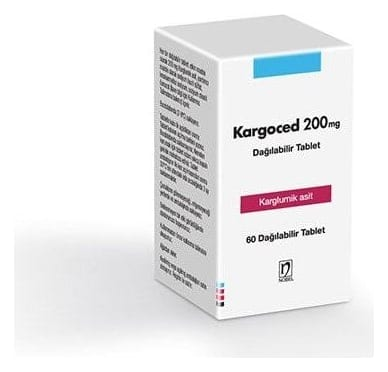

Kargoced 200 mg Dağılabilir Tablet, 5 ADET

Ne için kullanılır
KT · Bölüm 1KARGOCED 200 mg dağılabilir tablet’in etkin maddesi olan karglumik asit, amino asit türevleri adı verilen ve vücudumuzdaki metabolizma işlemlerinde rol alan maddelerdendir.
KARGOCED beyaz, oblong, bombeli, yazısız, armasız, 3 çentikli tabletler şeklindedir.
Tabletler 4 eşit parçaya bölünebilmekte ve doz ayarlaması yapılabilmektedir.
KARGOCED, karton kutu içerisinde yer alan çocuk kilitli, silika jelli, beyaz PP kapaklı, beyaz HDPE şişe içinde 5 veya 60 tablet içeren ambalajlarda piyasaya sunulmaktadır.
KARGOCED plazmada aşırı amonyak düzeylerini (kanda artan amonyak seviyesi) düşürmeye yardımcı olabilir. Amonyak özellikle beyin için toksiktir (zehirlidir) ve a ğır vakalarda bilinç kaybı ve komaya neden olmaktadır.
Hiperamonyemi (kandaki amonyak seviyesinin aşırı yükselmesi) aşağıdaki nedenlere bağlı olabilir: Karaciğerde bulunan özel bir enzim olan N- asetilglutamat sentaz yetmezliğinden kaynaklanıyor olabilir. Bu nadir bozukluğa sahip hastalar, protein alımından sonra biriken azot atıklarını vücuttan atamaz. Bu rahatsızlık, etkilenen hastada ömür boyu devam eder ve dolayısıyla bu tedavinin gerekliliği yaşam boyu devam etmektedir. İsovalerik asidemi, metilmalonik asidemi veya propiyonik asidemi. Bu bozukluklardan birine sahip hastaların hiperamonyemi krizi sırasında tedavi edilmesi gerekmektedir.